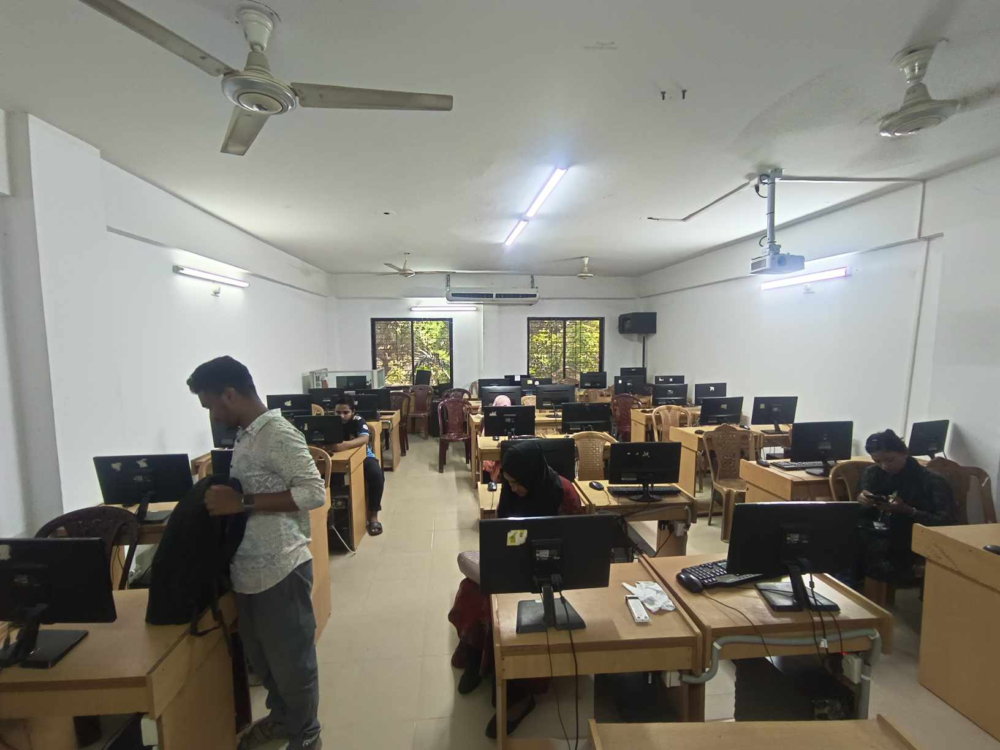
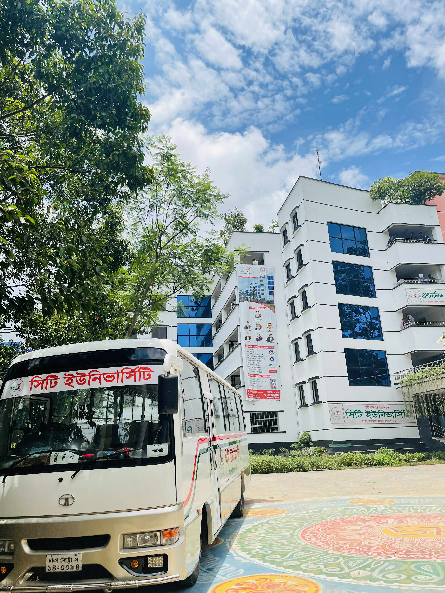

Course We offer
CSE | TEXTILE | MECHANICAL | EEE | BBA | LLB | AGRICULTURE
Intermediate
City University offers diploma and HSC-level foundation programs to help students transition into undergraduate studies smoothly.
Degree
Popular undergraduate programs include B.Sc. in CSE, EEE, Mechanical & Textile Engineering, BBA, LLB, and English Literature.
Post Graduation
The university offers Master's degrees in Business Administration (MBA), Law, English, and Engineering disciplines for career advancement.
Our Campus
City University has a modern permanent campus located in Ashulia, Dhaka. It features spacious academic buildings, high-tech labs, a digital library, and a green environment to support quality education and student development.City University's campus is designed for learning and growth — with smart classrooms, Wi-Fi access, career support centers, and recreational areas for all-round development.
Our Facilities
City University provides a wide range of facilities to support student success and well-being. These include smart classrooms, well-equipped laboratories, a digital library, high-speed Wi-Fi, and career counseling services. For comfortable accommodation, there are separate residential halls for male and female students. Additionally, the university offers dedicated bus services across Dhaka, ensuring safe and easy transportation.

Residential Hall
The university offers secure and comfortable residential halls for both male and female students to ensure a homely environment.

Well-Equipped Lab
City University features modern labs with updated tools and technology to enhance practical learning and research.

Student's Bus
Dedicated student bus services cover various routes across Dhaka, ensuring safe and convenient daily commutes.
Orbund
Students, Teachers, and Employees can access all necessary information here. To check your personal details, click here
Enroll For Our Various Online Course
Anywhere From The World
CONTACT US